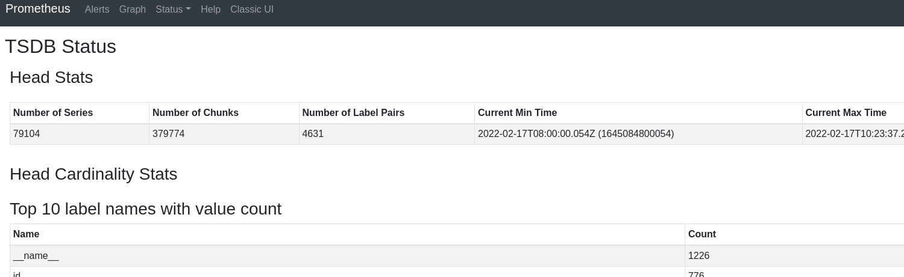
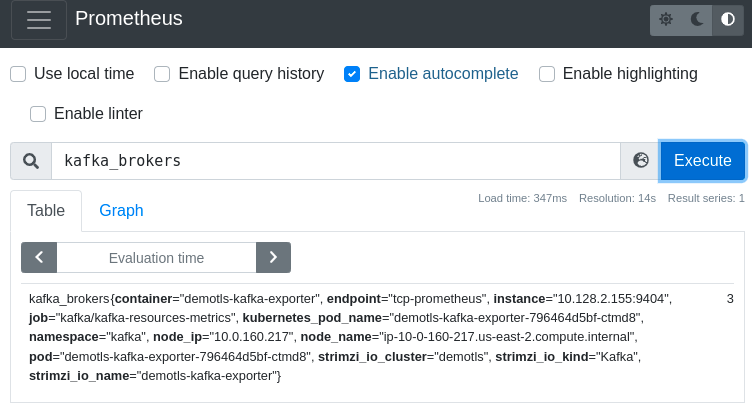
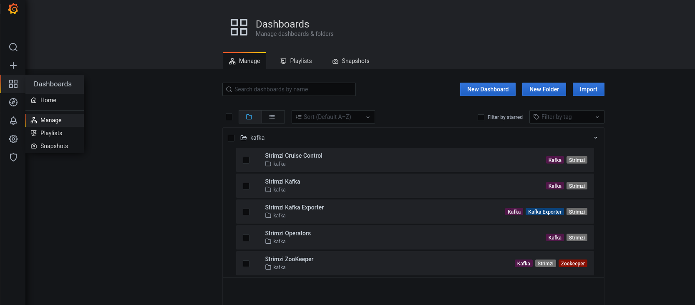
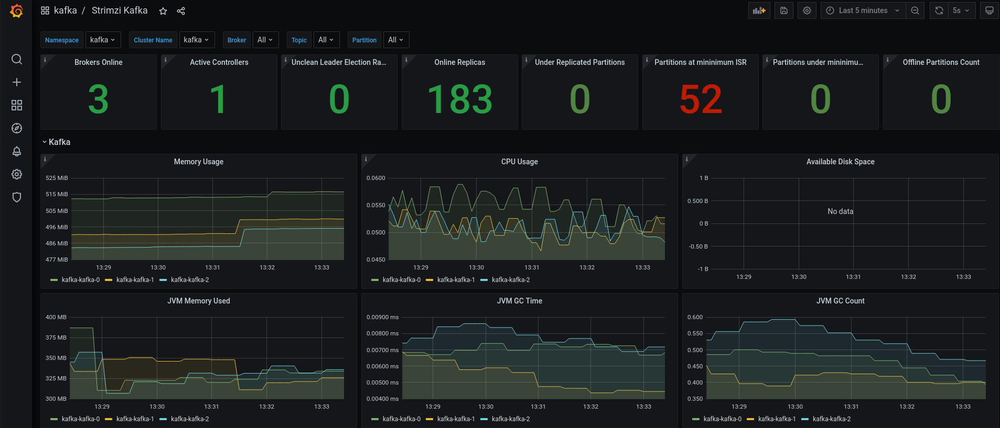

Monitoring
Monitoring is a important topic overall when it refers to distributed or complex systems. In order to monitor AMQ Broker, it supports Prometheus metrics using Prometheus JMX exporter to convert the JMX metrics supported by Apacha Kafka and Apache Zookeeper to Prometheus metrics. This feature will help us to monitorize the cluster using Prometheus to extract and store metrics and Grafana to expose them into dashboards.
Operators Installation
As any Operator installation in Openshift you can installed eighter by web console or cli console, you can do it as you want, however during the lab we will use cli console.
| To deploy Prometheus and Grafana Operators we need to install previously an OperatorGroup to match the Operator’s installation mode and the namespace. This step is describe in Adding Operators to a cluster page from OpenShift Documentation site. |
First we need deploy an OperatorGroup in the namespace where we’ll deploy or install Grafana and Prometheus operators. So we can use the following descriptor:
apiVersion: operators.coreos.com/v1
kind: OperatorGroup
metadata:
name: monitoring-operatorgroup
namespace: kafka
spec:
targetNamespaces:
- kafkaTake a look and then, just apply it.
oc apply -f operator/operator-group-monitoring.yamlOnce the OperatorGroup has been deployed, then you can deploy Grafana and Prometheus operator subscriptions:
oc apply -f operator/grafana-operator.yaml -n $OCP_NS
oc apply -f operator/prometheus-operator.yaml -n $OCP_NSTo ensure that all operators have been installed properly you can check it with the following command:
oc get csv -n $OCP_NSDeploy a Kafka cluster
The first step to monitoring a cluster is export metrics in order to Prometheus can extract them and stored. To achieve this the cluster must be deployed with some specific configuration parameters. In that case, the configuration required are located into ConfigMaps resources and they will be binded to the cluster configuration.
So, before go on we need remove the current Kafka cluster. Once the cluster have been deleted we will create a new one with the required monitoring configuration.
Let’s start with the required configuration. Firstly we need to create the ConfigMap resources:
oc apply -n $OCP_NS -f components/monitoring/kafka/kafka-metrics-cm.yaml
oc apply -n $OCP_NS -f components/monitoring/kafka/kafka-cruise-control-cm.yamlOnce configuration resources has been created, then we are going to deploy a new Kafka cluster with metrics exportation configuration, for this purpose we need to add the following code in Zookeeper and Cruise Control section:
metricsConfig:
type: jmxPrometheusExporter
valueFrom:
configMapKeyRef:
name: <secret>
key: <file>Take a look to the full descriptor and then apply in the cluster:
apiVersion: kafka.strimzi.io/v1beta2
kind: Kafka
metadata:
name: kafka
labels:
app: kafka
spec:
entityOperator:
topicOperator: {}
userOperator: {}
kafka:
version: 3.3.1
replicas: 3
config:
offsets.topic.replication.factor: 1
transaction.state.log.replication.factor: 1
transaction.state.log.min.isr: 1
default.replication.factor: 1
min.insync.replicas: 1
inter.broker.protocol.version: "3.3"
listeners:
- name: plain
port: 9092
type: internal
tls: false
- name: tls
port: 9093
type: internal
tls: true
- name: routetls
port: 9094
type: route
tls: true
authentication:
type: tls
metricsConfig:
type: jmxPrometheusExporter
valueFrom:
configMapKeyRef:
name: kafka-metrics
key: kafka-metrics-config.yml
authorization:
type: simple
storage:
type: ephemeral
zookeeper:
replicas: 3
metricsConfig:
type: jmxPrometheusExporter
valueFrom:
configMapKeyRef:
name: kafka-metrics
key: zookeeper-metrics-config.yml
storage:
type: ephemeral
kafkaExporter:
topicRegex: ".*"
groupRegex: ".*"
readinessProbe:
initialDelaySeconds: 15
timeoutSeconds: 5
livenessProbe:
initialDelaySeconds: 15
timeoutSeconds: 5
cruiseControl:
metricsConfig:
type: jmxPrometheusExporter
valueFrom:
configMapKeyRef:
name: cruise-control-metrics
key: metrics-config.ymlDeploy Prometheus
We will use Prometheus to extract and gather all metric data. In order to use it, we need to create a new Prometheus instance, for that it has been provided all descriptor needed to create the required resources, so you only need apply them:
oc apply -n $OCP_NS -f components/monitoring/prometheusLet’s take a look to prometheus-pod-monitor.yaml descriptor, which define a PodMonitor resource that specifies to Prometheus where metrics will be exposed
apiVersion: monitoring.coreos.com/v1
kind: PodMonitor
metadata:
name: cluster-operator-metrics
labels:
app: strimzi
spec:
selector:
matchLabels:
strimzi.io/kind: cluster-operator
namespaceSelector:
matchNames:
- kafka
podMetricsEndpoints:
- path: /metrics
port: http
---
apiVersion: monitoring.coreos.com/v1
kind: PodMonitor
metadata:
name: entity-operator-metrics
labels:
app: strimzi
spec:
selector:
matchLabels:
app.kubernetes.io/name: entity-operator
namespaceSelector:
matchNames:
- kafka
podMetricsEndpoints:
- path: /metrics
port: healthcheck
---
apiVersion: monitoring.coreos.com/v1
kind: PodMonitor
metadata:
name: bridge-metrics
labels:
app: strimzi
spec:
selector:
matchLabels:
strimzi.io/kind: KafkaBridge
namespaceSelector:
matchNames:
- kafka
podMetricsEndpoints:
- path: /metrics
port: rest-api
---
apiVersion: monitoring.coreos.com/v1
kind: PodMonitor
metadata:
name: kafka-resources-metrics
labels:
app: strimzi
spec:
selector:
matchExpressions:
- key: "strimzi.io/kind"
operator: In
values: ["Kafka", "KafkaConnect", "KafkaConnectS2I", "KafkaMirrorMaker", "KafkaMirrorMaker2"]
namespaceSelector:
matchNames:
- kafka
podMetricsEndpoints:
- path: /metrics
port: tcp-prometheus
relabelings:
- separator: ;
regex: __meta_kubernetes_pod_label_(strimzi_io_.+)
replacement: $1
action: labelmap
- sourceLabels: [__meta_kubernetes_namespace]
separator: ;
regex: (.*)
targetLabel: namespace
replacement: $1
action: replace
- sourceLabels: [__meta_kubernetes_pod_name]
separator: ;
regex: (.*)
targetLabel: kubernetes_pod_name
replacement: $1
action: replace
- sourceLabels: [__meta_kubernetes_pod_node_name]
separator: ;
regex: (.*)
targetLabel: node_name
replacement: $1
action: replace
- sourceLabels: [__meta_kubernetes_pod_host_ip]
separator: ;
regex: (.*)
targetLabel: node_ip
replacement: $1
action: replaceTake special attention to podMetricsEndpoint and namespaceSelector sections, it defines here the path where metrics and the namespace where will be exposed.
After a few minutes, you can access to the Prometheus instance and check if it has receive some metrics data. To access just get route endpoint and open it up in you browser:
oc get route -n $OCP_NS prometheus -o template --template='{{.spec.host}}'We can check if Prometheus is receiving information: Status → TSDB Status and we will see this table:

Additionally you can check if all is fine executing the following query:

Deploy Grafana
At this point, we are able to retrieve and store metric data but we haven’t a straightforward way to visualize the information or even some way to alert if something goes wrong. Grafana is an excellent tool for these task, widely used and easy to use.
Prometheus datasource configuration is allowed by Grafana, even it has a native descriptor for this purpose:
apiVersion: integreatly.org/v1alpha1
kind: GrafanaDataSource
metadata:
name: prometheus
spec:
name: prometheus
datasources:
- name: Prometheus
type: prometheus
access: proxy
url: http://prometheus-operated:9090
isDefault: true
version: 1
editable: true
jsonData:
tlsSkipVerify: true
timeInterval: "5s"Also a Grafana instance is necessary, check it out the following descriptor:
apiVersion: integreatly.org/v1alpha1
kind: Grafana
metadata:
name: grafana
spec:
ingress:
enabled: True
config:
log:
mode: "console"
level: "warn"
security:
admin_user: "admin"
admin_password: "admin1234"
auth:
disable_login_form: False
disable_signout_menu: True
auth.basic:
enabled: True
auth.anonymous:
enabled: False
dashboardLabelSelector:
- matchExpressions:
- {key: app, operator: In, values: [grafana]}Once you checked the manifest, then apply them:
oc apply -n $OCP_NS -f components/monitoring/grafana/grafana-datasource.yaml
oc apply -n $OCP_NS -f components/monitoring/grafana/grafana.yamlRight now, Grafana has been deployed correctly, however we need to create some dashboards in order to show the information extracted from Prometheus in a useful way. So we are going to configure these dashboard apply the following descriptors:
oc apply -n $OCP_NS -f components/monitoring/grafana/dashboardNow you need the Grafana URL exposed by route, so execute the following command to get it and then paste in your browser:
oc get route grafana-route -o template --template='{{"https://"}}{{.spec.host}}'When you access into Grafana a login page show up, the credentials to access are defined in the grafana descriptor that we checked it out previously.
| The password for the user admin is admin1234, however we encourage to review the Grafana instance descriptor. |
Finally we can access to the differents dashboards availables (which we are created before):

For instance, go to kafka dashboard:

In this way you can review the information easely even you can create some alert if you need or you can create as much dashboard as you need following the same way that we shows in this laboratory.